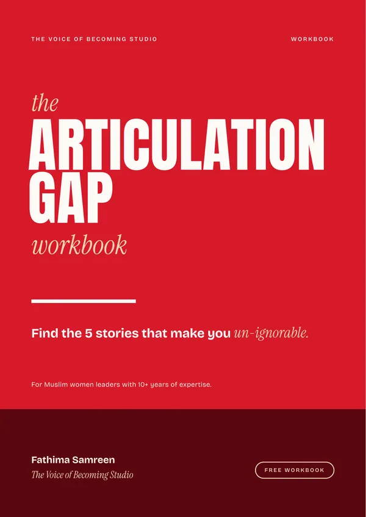

The Voice of Becoming newsletter
Every role you carry is part of your story.
Letters for women who lead at work and hold everything together at home. On voice, self-worth, faith and building a career from exactly where you are.
Free. Your email stays private. Unsubscribe any time.
What you'll get
In your inbox.
01
Stories, not content
Real moments from the many roles women carry, and the truth behind them.
02
Write-this-down prompts
Small prompts to put your own story on paper, one line at a time.
03
From the ghostwriting desk
What 7+ years of writing for leaders has taught me about voice and authority.

Welcome gift
Subscribe and get the workbook.
Join the newsletter and the free Articulation Gap workbook comes with your welcome email.
Join the newsletter